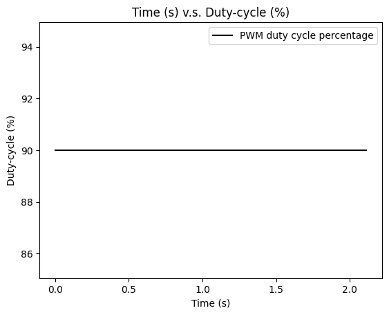

The objective of this lab is to combine what I have done from previous lab to fully implement a stunt on the robot as fast as possible.
Lab Task A: Position Control
Since I have chosen "Position Control" task in lab 7, in this lab, I will implement my stunt when the robot is approaching the wall. Basically the process of the stunt is:
1. Start the robot away from the wall within 4m and hardcode to give its motors a fast enough speed to drive it towards the wall. The reason here to hardcode the PWM values for motors instead of applying PID position control to adjust PWM based on distance error is because the robot needs to go fast enough to do a flip, but PID position control will slow down the speed as the robot approaching the wall.
2. When the distance between robot and the wall is around 0.5m, the robot motors will spin reversely with max PWM values (255) to perform a flip.
3. The robot will then drive back away from the wall in a fast speed.
To ensure the robot motors can spin reversely in time to perform the flip regarding the high running speed while low distance sensor sampling rate, the Kalman filter developed before is used to predict the distance between robot and the wall and hence based on the faster updated distance prediction, the reverse spinning can happen on time to perform the flip.
Starting from the line, the robot is coded to travel forward to the wall at a speed of 90% of PWM duty cycle and as the Kalman filter distance estimation gives a reading of 500 mm, the PWM duty cycle percentage is reversed to 100% to try to achieve a flip. The code snippet of this stunt process is given as below, where the initial distance for Kalman filter is initialized to be x_val = {-4000, 0};, the forward speed is 90% PWM duty cycle.
It needs to be noticed that when the new distance measurement from ToF sensor is ready, the Kalman filter will run both prediction and update parts, otherwise the Kalman filte only runs prediction part based on the most recent previously measured distance from ToF sensor. Hence in this way, not only Kalman filter can help complement ToF low sampling rate by making prediction, the ToF sensor measurement reflecting real time distance between robot and the wall can also help rectify the Kalman filter prediction by calling update step.
The stunt_kf function is used to define Kalman filter which takes sampling rate (I set it to 0.002 s which is about the running speed of the while loop in the case above that calls this function to get new Kalman filter output) and a defined struct sensor_result which contains int type measured distance and a boolean indicating if new sensor measurement is ready. The code snippets for stunt_kf() and sensors.get_front_dist() are shown as below.
The video below shows how implementation of Kalman Filter improves the running speed of robot effectively. According to the video shows, the robot is set to stop when approaching the wall (< 500 mm), but because of inertance the robot stills move forward.
Kalman Filter ImplementationThe distance data from ToF sensor when robot is driving towards the wall are shown in plot as below. Since the ToF sensor is using long distance mode, the sampling rate is around 60 ms, therefore, it still plots the most recent measurement if the new measurement is not ready.
 Distance Data from ToF Sensor
Distance Data from ToF Sensor
The distance data predicted by Kalman Filter is plotted as below. It can be seen the Kalman filter prediction plot is much smoother than ToF sensor measurement with almost no repeating values.
 Distance Data from Kalman Filter Prediction
Distance Data from Kalman Filter Prediction
The PWM duty cycle percentage during the forward process is plotted as below. The PWM is 90% contantly until the Kalman Filter predicted distance between robot and the wall is less than 500 mm, when the motors start to spin reversely.
 PWM duty-cycle Percentage
However, unfortunately, after several times of tests, I still cannot achieve flip even with hardcoded maximum spinning speed (255) running forward and backward. The robot just turn in circles at the moment the motors spin reversely from foward spinning. I think the reason that it cannot flip is because that I put too many components on the one side of the robot, making its center of gravity stays on that side instead of center. Also, it is possible that because of some hardware issues such as different motor spinning speed can result the difficulty to make a flip.
A failure flip attempt video is shown as below.
Flip Attempt but Failed T TIn this case, I borrowed my teammate's robot and implement the Kalman Filter to make the robot run in a high speed and try the stunt. Luckily, the robot does flips successfully!!! Below are videos showing the flips.
Flip Attempt 1 Flip Attempt 2 Flip Attempt 3Texts and Videos by Zhongqi Tao